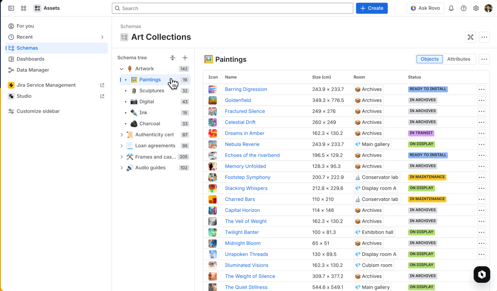
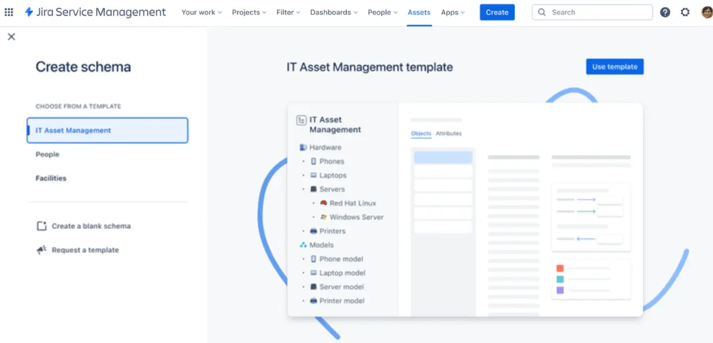
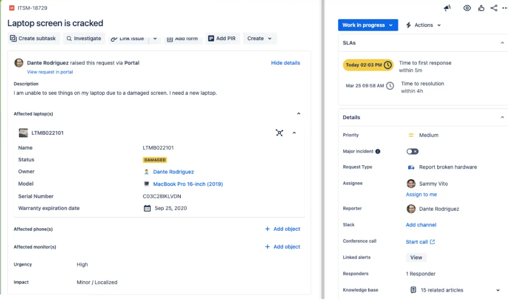
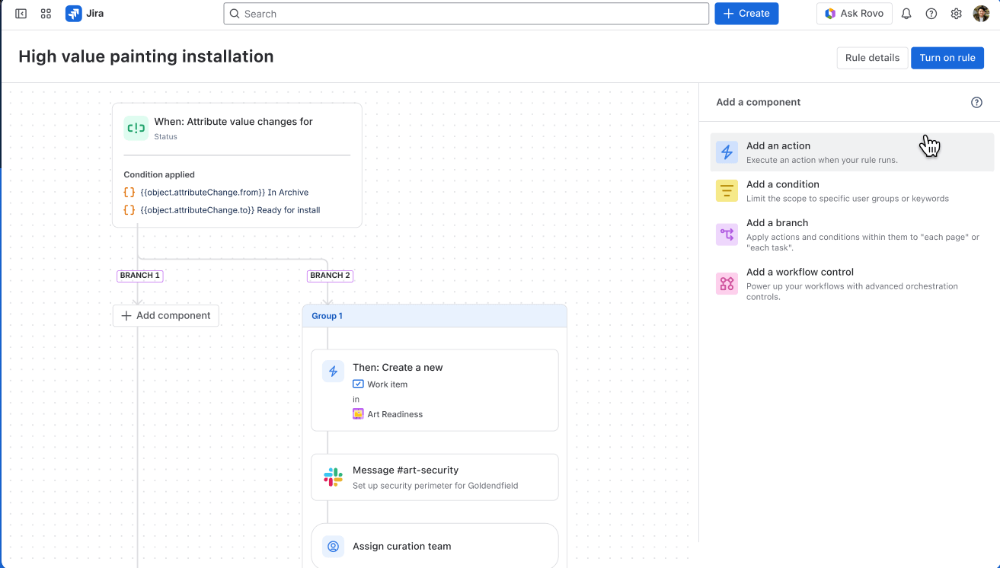
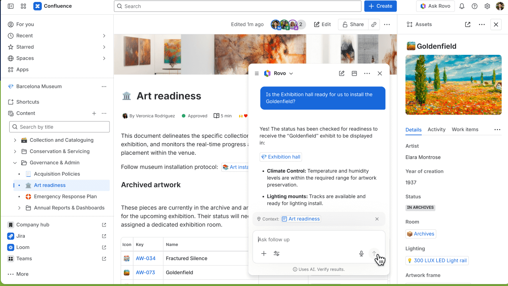
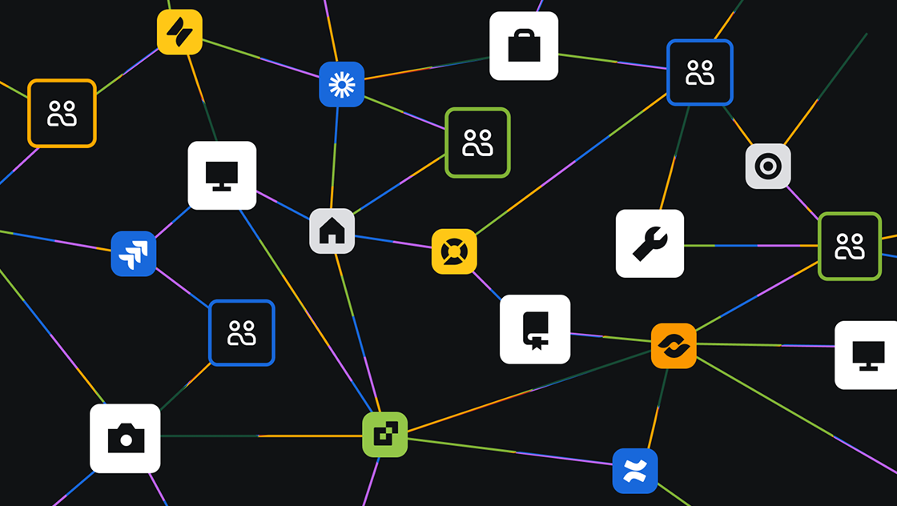
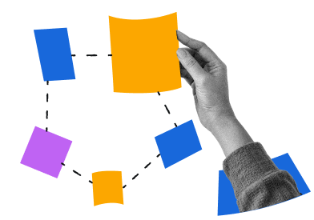
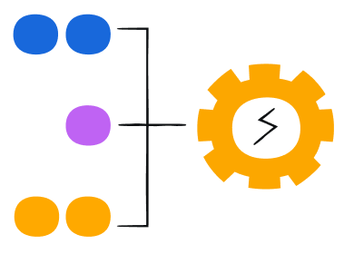

Content：我們擁有什麼
追蹤資產的採購、財務與生命週期。重點是清楚、可盤點、可稽核。
看清相依關係，加速事件排障、降低變更風險，CMDB 就內建在 Jira。

「我們到底有哪些重要資產？服務之間怎麼相依？」當答案散落在試算表與不同人的腦袋裡，每一次事件與變更都在賭運氣。
資產散落各系統與負責人手中，沒有單一準確來源。
查一台設備規格、誰在用，得問過一輪人才有答案。
不知道改一個元件會牽動哪些系統，變更上線才發現連鎖故障。
閒置設備、重複授權與多餘支援，帳單默默變大。
需求一變，要花好幾個月人工釐清「該動哪些系統」。
零日漏洞公布時，答不出「哪些資產受影響」。
落實資產與組態管理，讓團隊專注於創新，而不是疲於應付混亂。
失敗的共通點是「一開始範圍鋪太大」：想一次收齊所有資料，最後維護不動、沒人信任。Assets 換一條路：從一兩個真實問題開始，小步把可信來源養大。
「Decision making requires data. Effective decision making requires reliable data.」決策需要資料；有效的決策，需要可信賴的資料。
Assets 就是內建在 Jira 的 CMDB（設定管理資料庫，Configuration Management Database）：集中記錄組織所有資產、設定項與它們之間的關係。它用四層結構描述你的世界，再用「參照」把彼此連起來，可以想成資料庫、資料夾、卡片與欄位。

| Name | 狀態 | 製造商 | 型號 | 價格 | 負責人 | 汰換日 |
|---|---|---|---|---|---|---|
| AT-B022103 | In use | Apple | MacBook Pro 13" | $1,399 | Jennifer Fish | 2024-09-13 |
| AT-B042101 | In use | Apple | MacBook Pro 13" | $1,399 | Blythe Smithson | 2024-12-10 |
| ATM-B042103 | In use | Apple | MacBook Pro M2 | $1,259 | Jeremy Coolman | 2025-02-01 |
| ATM-B111102 | In stock | Lenovo | ThinkPad E15 Gen 3 | — | — | 2025-07-14 |
| AT-B022101 | Disposed | Apple | MacBook Pro 13" | $1,399 | — | — |
每一列是一個 object，每一欄是一個 attribute。狀態、負責人、汰換日都能拿來查詢、自動化與稽核。
Assets 同時做到資產庫與 CMDB：一邊管「我們有什麼」，一邊管「它們如何牽動彼此」。
追蹤資產的採購、財務與生命週期。重點是清楚、可盤點、可稽核。
描繪資產之間的相依關係，理解一次變更的「影響範圍」。
資產管理正從被動的盤點清冊，演進成驅動成長與韌性的策略平台。
用統一平台取得全企業可視性，超越傳統 CMDB 的僵硬範式。
「手動資產管理，是準確性的敵人。」以自動探索與 AI 從被動救火轉為主動預警。
73% 把自動化列為關鍵優先你的資產，只跟你對它們的了解一樣安全。從定期稽核走向持續驗證。
從探索、連結、查詢到稽核，覆蓋資產管理的每一步。
用服務地圖看清資產與服務怎麼牽動彼此，事件排障與變更評估前先看見影響範圍。
物件直接連到 Jira 工作項，事件一進來就帶著資產資訊。
列印 QR 貼到實體資產，手機掃碼即開紀錄、直接掛上工單。
用 Assets Query Language 做複雜條件查詢、稽核與成本盤點。
無代理掃描器找出 IP 連網裝置，揪出影子 IT、保持資料最新。
每個物件的完整變更歷史，滿足合規與責任追蹤。
從 SQL、Lansweeper 到平面檔，30+ adapter 匯入資料；批次編輯、刪除、匯出 CSV，企業規模也輕鬆維護。
Assets 不只是清單，更不是另一套要切換的系統。物件直接連到工單與自動化，並在 Confluence、Rovo AI 之間協作，讓資料真正驅動工作。（以下為博物館藏品管理的真實畫面）

用 Assets 自訂欄位把物件接到請求／事件／變更。客服一開工單就看到型號、序號、保固與擁有者，不必另開系統查。

用物件的狀態或屬性觸發 Jira 自動化。例如畫作狀態從「在庫」變「待安裝」，就自動建立工作項、在 Slack 通知 #art-security、指派策展團隊。

把業務物件帶進團隊日常協作。在 Confluence 文件旁直接看到資產面板，問 Rovo「展廳準備好安裝了嗎」即時得到答案，大幅減少切換。
有了 Assets，Atlassian 的 Teamwork Graph 成為唯一統合「人、工作與業務物件」的知識圖譜，帶來完整可視性、更聰明的決策、無縫協作，以及更高的組織敏捷。

用最貼合營運方式的方法，追蹤真正重要的東西。任何產業、任何物件都能建模，不只 IT，連博物館藏品都行。

從筆電到軟體授權，在單一系統追蹤、管理與優化整個 IT 基礎架構。
管理資源、追蹤資產關係、確保合規，全部來自單一可信來源。

用即時資產狀態連結設備、追蹤庫存、自動化工作流程。
情境：一幅高價畫作「Goldenfield」要從庫房移到展廳安裝。前面的能力，在這裡連成一條線。
策展人把畫作狀態從「在庫」改為「待安裝」。
自動化偵測到狀態變更，建立「Art Readiness」工作項。
在 Slack 通知 #art-security，為畫作佈署維安週界。
自動指派策展團隊，接手後續安裝。
在 Confluence 問 Rovo「展廳準備好了嗎」，即時確認溫濕度與燈光。
健全的資產與組態管理，不只是 IT 後勤，更是業務韌性與資安防線。
一次軟體故障讓紐約證交所近 90 分鐘無法交易。正因有健全的服務組態管理，團隊才能快速辨識並復原，把損害壓到最低。
Exchange Server 零日漏洞遭串接攻擊時，Qualys 憑藉資產與組態管理能力，在威脅公布後數小時內就辨識出可能受影響的資產。
「Assets 對於掌握軟體授權與成本的可預測性與規劃，非常重要。」
不必一次到位。鈦坦科技以 Atlassian 黃金級合作夥伴身分，陪你走完這五步。
盤點現有工具、流程與痛點，建立基準。
連結資產能力與商業成果，先做速贏。
集中單一可信來源，自動化探索與驗證。
打破孤島，整合服務管理、資安與採購。
持續改善、主動監控與告警。
鈦坦科技（Titansoft）為 Atlassian 黃金級合作夥伴，提供 Assets / CMDB 導入評估、schema 規劃、資料匯入與自動化設定。歡迎與我們聊聊你的資產管理現況。